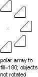

Autodesk AutoCAD 2021: ActiveX Developer's Guide > Create and Edit AutoCAD Entities > About Modifying Objects (VBA/ActiveX) >
You can array all drawing objects to fill a circular pattern.
To create a polar array, use the ArrayPolar method provided for that object. This method requires you to provide the number of objects to create, the angle-to-fill, and the center point for the array. The number of objects must be a positive integer greater than 1. The angle-to-fill must be in radians. A positive value specifies counterclockwise rotation. A negative value specifies clockwise rotation. An error is returned for an angle that equals 0. The center point is a variant array containing three doubles. These doubles represent the 3D WCS coordinate specifying the center point for the polar array.

AutoCAD determines the distance from the array's center point to a reference point on the original object. The reference point used depends on the type of object. AutoCAD uses the center point of a circle or arc, the insertion point of a block or shape, the start point of text, and one endpoint of a line or trace.
This method does not support the Rotate While Copying option of the AutoCAD ARRAY command.
This example creates a circle, and then performs a polar array of the circle. This creates four circles filling 180 degrees around a base point of (4, 4, 0).
Sub Ch4_ArrayingACircle() ' Create the circle Dim circleObj As AcadCircle Dim center(0 To 2) As Double Dim radius As Double center(0) = 2#: center(1) = 2#: center(2) = 0# radius = 1 Set circleObj = ThisDrawing.ModelSpace.AddCircle(center, radius) ZoomAll ' Define the polar array Dim noOfObjects As Integer Dim angleToFill As Double Dim basePnt(0 To 2) As Double noOfObjects = 4 angleToFill = 3.14 ' 180 degrees basePnt(0) = 4#: basePnt(1) = 4#: basePnt(2) = 0# ' The following example will create 4 copies ' of an object by rotating and copying it about ' the point (3,3,0). Dim retObj As Variant retObj = circleObj.ArrayPolar(noOfObjects, angleToFill, basePnt) ZoomAll End Sub